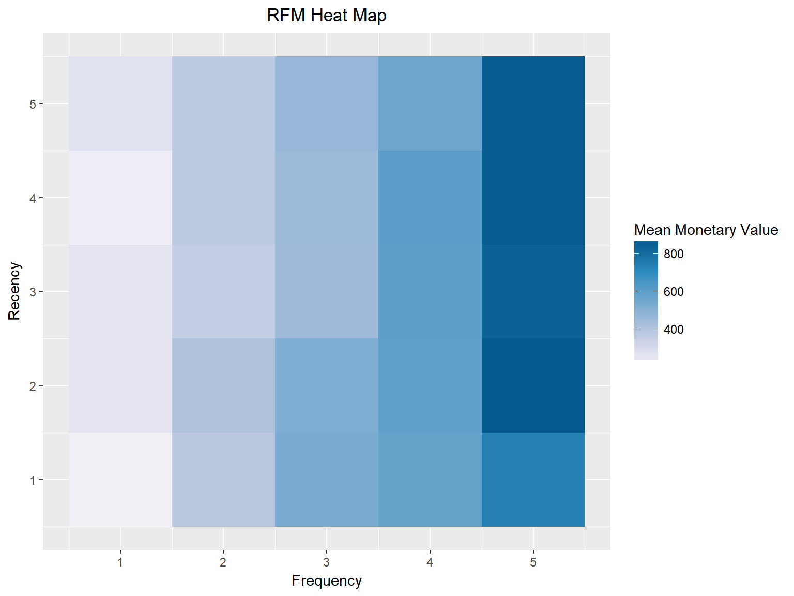
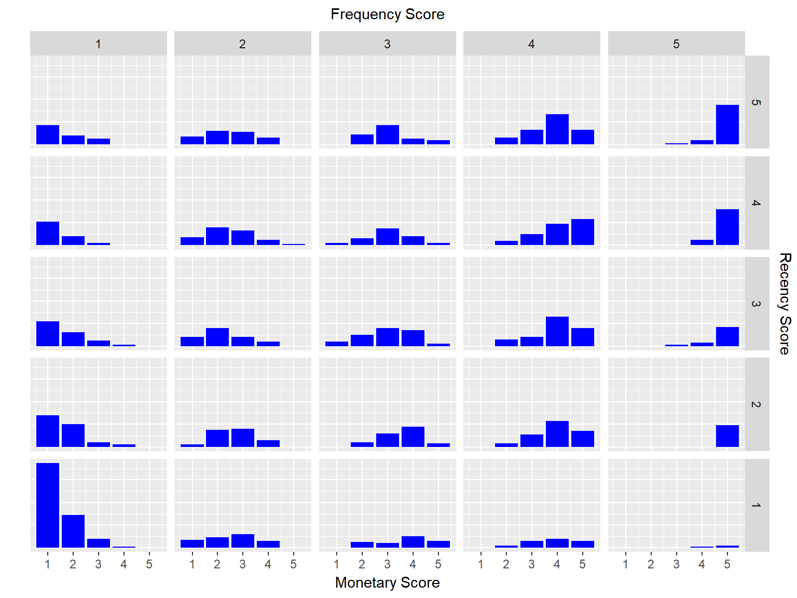

Tools for RFM Analysis


Overview
Tools for RFM (recency, frequency and monetary) analysis. Generate RFM score from both transaction and customer level data. Visualize the relationship between recency, frequency and monetary value using heatmap, histograms, bar charts and scatter plots.
Installation
# Install rfm from CRAN install.packages("rfm") # Or the development version from GitHub # install.packages("devtools") devtools::install_github("rsquaredacademy/rfm")
Usage
Introduction
RFM (recency, frequency, monetary) analysis is a behavior based technique used to segment customers by examining their transaction history such as
- how recently a customer has purchased (recency)
- how often they purchase (frequency)
- how much the customer spends (monetary)
It is based on the marketing axiom that 80% of your business comes from 20% of your customers. RFM helps to identify customers who are more likely to respond to promotions by segmenting them into various categories.
Data
To calculate the RFM score for each customer we need transaction data which should include the following:
- a unique customer id
- date of transaction/order
- transaction/order amount
RFM Table
rfm uses consistent prefix rfm_ for easy tab completion. Use rfm_table_order() to generate the RFM score.
analysis_date <- lubridate::as_date('2006-12-31') rfm_result <- rfm_table_order(rfm_data_orders, customer_id, order_date, revenue, analysis_date) rfm_result #> # A tibble: 995 x 9 #> customer_id date_most_recent recency_days transaction_count amount #> <chr> <date> <dbl> <dbl> <dbl> #> 1 Abbey O'Reilly DVM 2006-06-09 205 6 472 #> 2 Add Senger 2006-08-13 140 3 340 #> 3 Aden Lesch Sr. 2006-06-20 194 4 405 #> 4 Admiral Senger 2006-08-21 132 5 448 #> 5 Agness O'Keefe 2006-10-02 90 9 843 #> 6 Aileen Barton 2006-10-08 84 9 763 #> 7 Ailene Hermann 2006-03-25 281 8 699 #> 8 Aiyanna Bruen PhD 2006-04-29 246 4 157 #> 9 Ala Schmidt DDS 2006-01-16 349 3 363 #> 10 Alannah Borer 2005-04-21 619 4 196 #> recency_score frequency_score monetary_score rfm_score #> <int> <int> <int> <dbl> #> 1 3 4 3 343 #> 2 4 1 2 412 #> 3 3 2 3 323 #> 4 4 3 3 433 #> 5 5 5 5 555 #> 6 5 5 5 555 #> 7 3 5 5 355 #> 8 3 2 1 321 #> 9 2 1 2 212 #> 10 1 2 1 121 #> # ... with 985 more rows
Heat Map
The heat map shows the average monetary value for different categories of recency and frequency scores. Higher scores of frequency and recency are characterized by higher average monetary value as indicated by the darker areas in the heatmap.
rfm_heatmap(rfm_result)

Bar Chart
Use rfm_bar_chart() to generate the distribution of monetary scores for the different combinations of frequency and recency scores.
rfm_bar_chart(rfm_result)

Histogram
Use rfm_histograms() to examine the relative distribution of
- monetary value (total revenue generated by each customer)
- recency days (days since the most recent visit for each customer)
- frequency (transaction count for each customer)
rfm_histograms(rfm_result)

Customers by Orders
Visualize the distribution of customers across orders.
rfm_order_dist(rfm_result)


Getting Help
If you encounter a bug, please file a minimal reproducible example using reprex on github. For questions and clarifications, use StackOverflow.